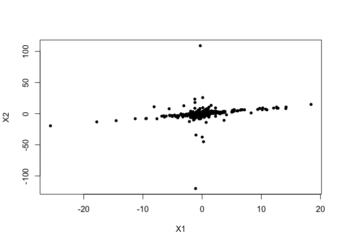

The goal of causalXtreme is to provide an interface to perform causal discovery in linear structural equation models (SEM) with heavy-tailed noise. For more details see Gnecco et al. (2019, https://arxiv.org/abs/1908.05097).
Installation
You can install the development version from GitHub with:
# install.packages("devtools")
devtools::install_github("nicolagnecco/causalXtreme")Example
Let us generate 500 observations from a SEM of two Student-t variables, X1 and X2, with 1.5 degrees of freedom (i.e., heavy-tailed). When the function simulate_data is called with the default values, it returns a list containing:
- the simulated
datasetrepresented as a matrix of size n × p. Here, n = 500 is the number of observations and p = 2 is the number of variables, - the underlying directed acyclic graph (DAG) represented as an adjacency matrix
dagof size p × p.
library(causalXtreme)
# basic example code
set.seed(1)
sem <- simulate_data(n = 500, p = 2, prob_connect = 0.5,
distr = "student_t", tail_index = 1.5)At this point, we can look at the randomly simulated DAG.
sem$dag
#> [,1] [,2]
#> [1,] 0 1
#> [2,] 0 0We interpret the adjacency matrix as follows. Loosely speaking, we say that variable Xi causes variable Xj if the entry (i,j) of the adjacency matrix is equal to 1. We see that the first variable X1 causes the second variable X2, since the entry (1,2) of the matrix sem$dag is equal to 1. We can plot the simulated dataset.
plot(sem$dataset, pch = 20,
xlab = "X1", ylab = "X2")
At this point, we can estimate the causal direction between X1 and X2 by computing the causal tail coefficients Γ12 and Γ21 (see Gnecco et al. 2019, Definition 1).
X1 <- sem$dataset[, 1]
X2 <- sem$dataset[, 2]
# gamma_12
causal_tail_coeff(X1, X2)
#> [1] 0.9523333
# gamma_21
causal_tail_coeff(X2, X1)
#> [1] 0.4816667We see that the coefficient Γ12 ≈ 1 (entry (1,2) of the matrix) and Γ21 < 1 (entry (2,1) of the matrix). This is evidence for a causal relationship from X1 to X2.
We can also run the extremal ancestral search (EASE) algorithm, based on the causal tail coefficients (see Gnecco et al. 2019, sec. 3.1). The algorithm estimates from the data a causal order of the DAG.
ease(dat = sem$dataset)
#> [1] 1 2In this case, we can see that the estimated causal order is correct, since X1 (the cause) is placed before X2 (the effect).